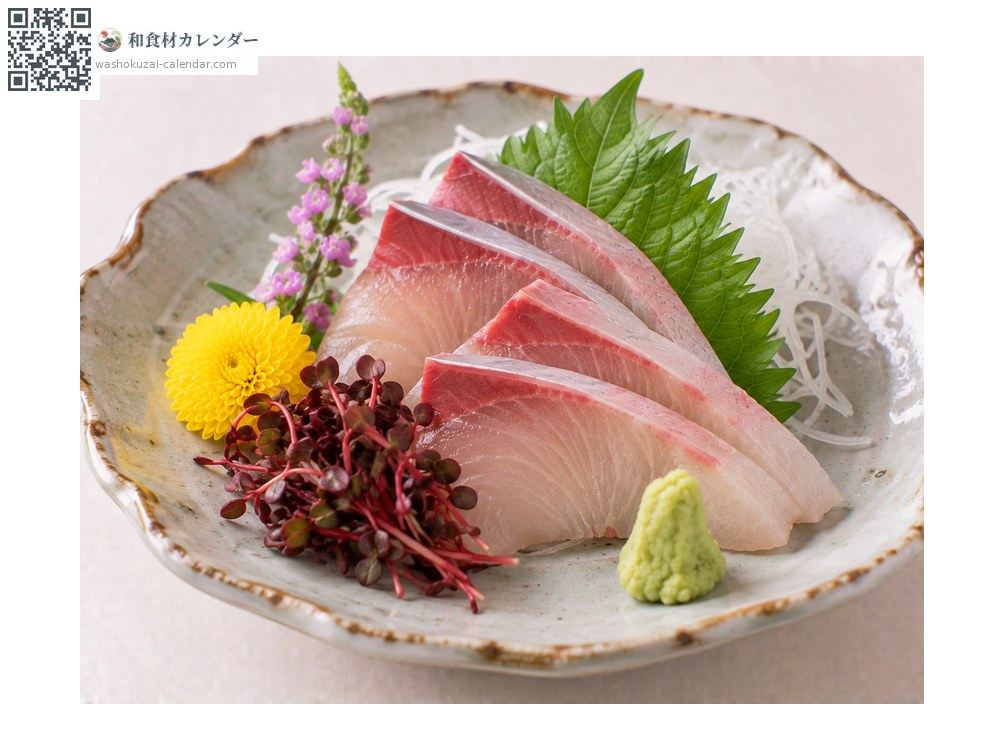
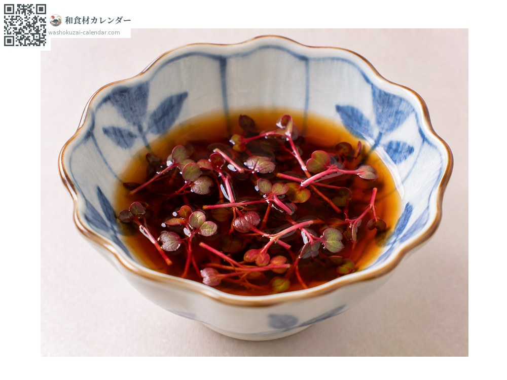
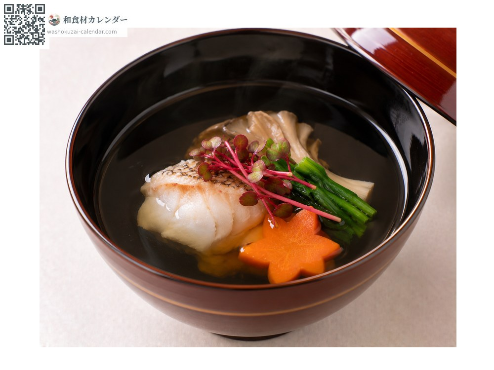

蔬菜
红蓼嫩芽
紅蓼 べにたで benitade
别名benitade
尚未登记应季时期

应季时期
1月
2月
3月
4月
5月
6月
7月
8月
9月
10月
11月
12月
应季有供应
烹饪方法

生鱼片配菜
撒在生鱼片上，微辛能切开油脂。

佐料
撒进酱油里，增添香气与辛味。

点缀
用于汤品或八寸的配色，红色格外醒目。
挑选方法
茎呈鲜艳的红色、子叶成对完整。没有枯萎。
保存方法
不耐干燥。用湿纸包好密封冷藏，两到三天内用完。
主要产地
小知识
是水蓼的嫩芽，以遮光方式软白栽培。就是谚语「蓼虫不知苦」里的蓼，其辛味被认为能抑制生鱼的腥味。附在生鱼片旁不只是为了配色，也有杀菌的意义。